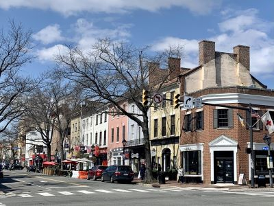
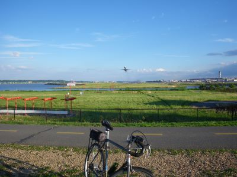
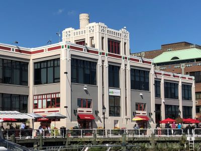
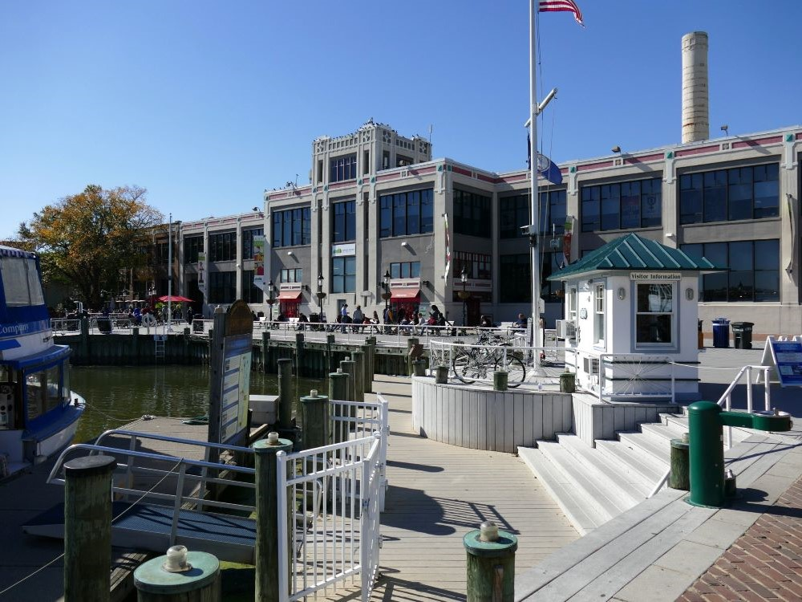
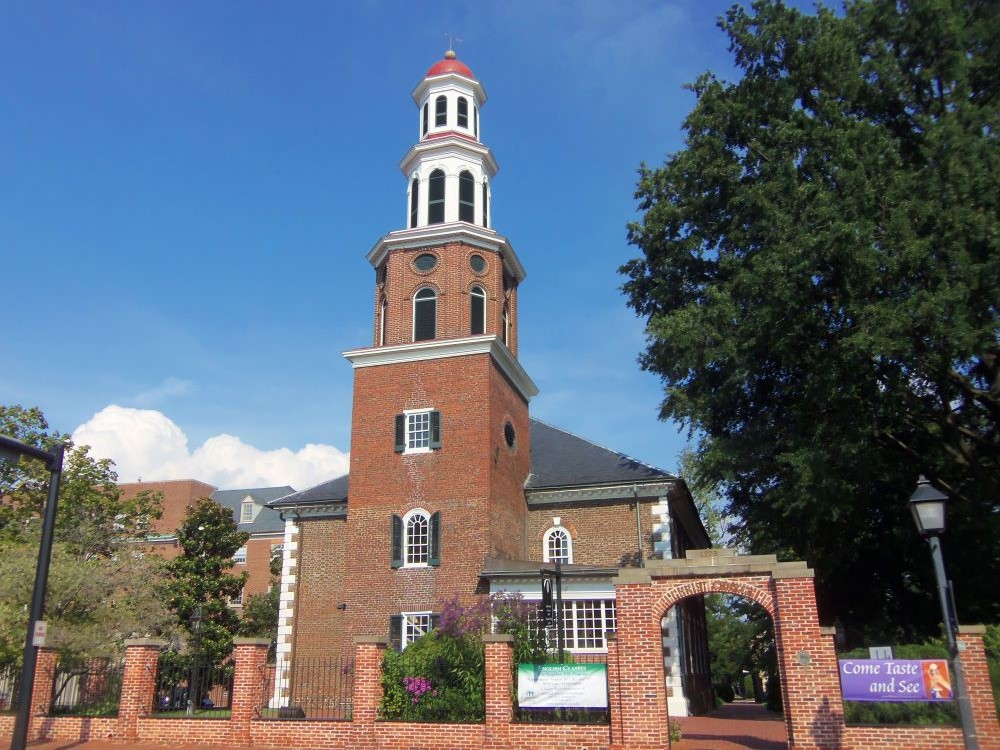
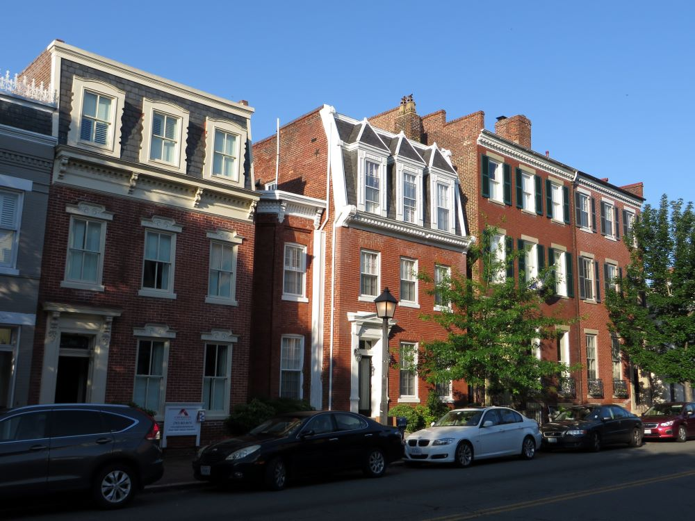
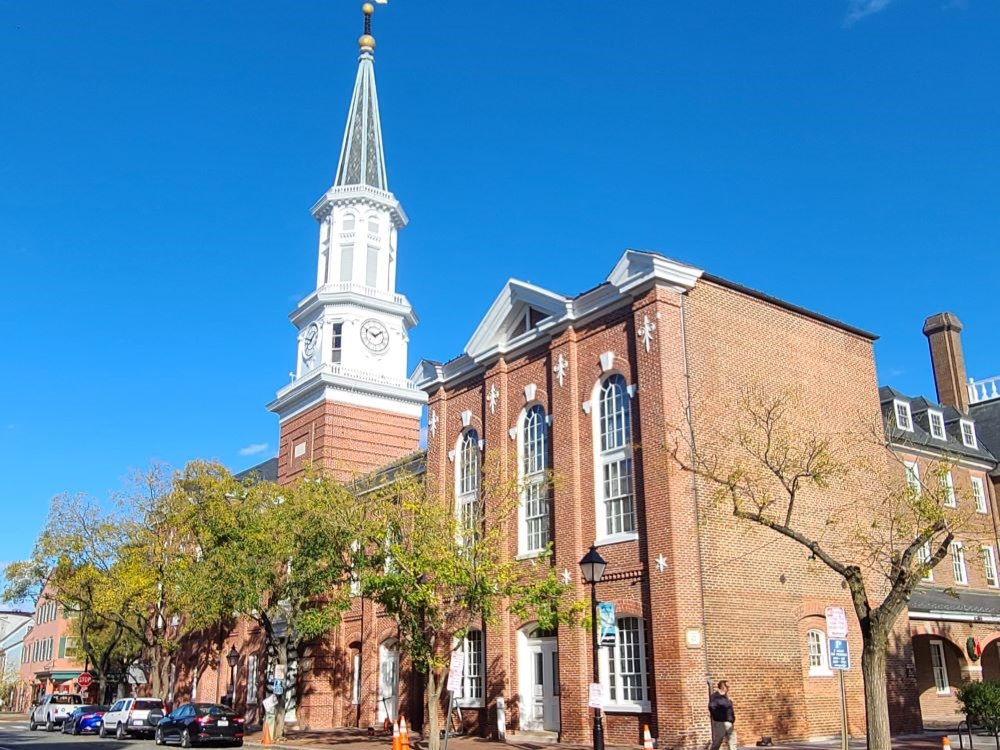

Alexandria Travel Guide
Historic waterfront community featuring preserved colonial architecture, vibrant arts and dining districts, scenic riverfront views, and centuries of American history.

American Civil War Museum, CC BY-SA 4.0, via Wikimedia Commons; Image Size Adjusted

Alexandria Historical District
Preserved colonial-era neighborhood featuring historic architecture, cobblestone streets, and landmarks reflecting over 250 years of American history.

American Civil War Museum, CC BY-SA 4.0, via Wikimedia Commons; Image Size Adjusted
Gadsby's Tavern
Historic venue featuring 18th-century architecture, period furnishings, and exhibits that explore early American social and political life.
Ben Schumin from Montgomery Village, Maryland, USA, CC BY-SA 2.0, via Wikimedia Commons; Image Size Adjusted
.jpg){kind=link}
George Washington Masonic National Memorial
Nine-story neoclassical memorial and museum dedicated to George Washington, featuring Masonic history exhibits, ceremonial halls, a research collection, and panoramic observation deck views.
Hollensbury Spite House
Narrow two-story brick home built in the 1830s with Federal-style architecture, known for its unusually slim width and colorful origin stories.
American Civil War Museum, CC BY-SA 4.0, via Wikimedia Commons; Image Size Adjusted
Jones Point Park
Riverside park featuring historic landmarks, playgrounds, trails, and scenic views beneath the Woodrow Wilson Bridge.

olekinderhook, CC BY 3.0, via Wikimedia Commons; Image Size Adjusted
.jpg){kind=link}
King Street
Historic urban corridor lined with retail districts, dining venues, preserved architecture, and pedestrian-friendly blocks that serve as a primary commercial spine.

olekinderhook, CC BY 3.0, via Wikimedia Commons; Image Size Adjusted
Mount Vernon Trail
Scenic 18-mile paved trail along the Potomac River connecting historic landmarks, parks, and waterfront views from Mount Vernon to Washington, D.C.
American Civil War Museum, CC BY-SA 4.0, via Wikimedia Commons; Image Size Adjusted
National Inventors Hall of Fame Museum
Interactive museum celebrating American innovation through exhibits honoring patent holders, breakthrough inventions, and the people whose ideas have transformed everyday life.
American Civil War Museum, CC BY-SA 4.0, via Wikimedia Commons; Image Size Adjusted
Old Town
Charming historic district featuring cobblestone streets, 18th-century architecture, boutique shops, art galleries, and a scenic waterfront promenade.
American Civil War Museum, CC BY-SA 4.0, via Wikimedia Commons; Image Size Adjusted
Old Town Alexandria Waterfront
Scenic riverside district offering waterfront parks, dining, art, and historic attractions with views of the Potomac River.
Rodney Martin from Augusta, GA, CC BY 2.0, via Wikimedia Commons; Image Size Adjusted
.jpg){kind=link}
Stabler-Leadbeater Apothecary Shop
Historic 18th-century apothecary shop preserved as a museum showcasing original medicinal ingredients, glassware, and early pharmaceutical practices.

Ben Schumin from Montgomery Village, Maryland, USA, CC BY-SA 2.0, via Wikimedia Commons; Image Size Adjusted
.jpg){kind=link}
Torpedo Factory Art Center
Former naval munitions plant transformed into a public art center with working studios, galleries, and interactive exhibits.
Overview
Alexandria is a historic port city on the Potomac River in Northern Virginia, just across from Washington, D.C., and it is known for its well-preserved Old Town, with cobblestone streets, colonial and Federal-style townhouses, and a lively waterfront. George Washington and Robert E. Lee both lived in the city, and it has a rich history from the colonial era to the Civil War. Today Alexandria combines its historic charm with a modern energy, with art galleries, restaurants, and boutiques, and it is easily accessible from the capital by Metro.
Visitors come to Alexandria to stroll King Street and the Old Town waterfront, to visit the Torpedo Factory Art Center, and to see Gadsby's Tavern Museum and the George Washington Masonic National Memorial. They also come for Mount Vernon, just south of the city, and for the Mount Vernon Trail along the Potomac.
History
Alexandria was founded in 1749 by Scottish merchants and named for the Alexander family, who owned the land, and a young George Washington helped survey the town. It grew as a tobacco port, and in the 1790s it was part of the new District of Columbia, but Virginia took it back in 1846. At the start of the Civil War, Union troops occupied the city in 1861, and it remained in Union hands for most of the war, serving as a supply center. In the twentieth century, Alexandria's Old Town was preserved as a historic district, and the city has since developed into a lively center for dining and shopping. Amazon's "National Landing" campus, nearby, has brought new growth.
Sightseeing and Popular Landmarks
The Old Town waterfront has restaurants, a promenade along the Potomac, and boats, and King Street is a mile-long street of shops and restaurants, ending at the river, with a free trolley. The George Washington Masonic National Memorial, a 333-foot tower modeled on the Lighthouse of Alexandria, has an observation deck, and the Hollensbury Spite House, only 7 feet wide, is one of the narrowest houses in the country. The Alexandria Historic District, with its Georgian and Federal buildings, is a National Historic Landmark.
Culture and Museums
The Torpedo Factory Art Center, in a former munitions plant, has more than 80 working artist studios, and Gadsby's Tavern Museum is in a tavern where Washington, Jefferson, and Madison once dined. The Stabler-Leadbeater Apothecary Museum is one of the oldest apothecary shops in the country, and the National Inventors Hall of Fame Museum is at the U.S. Patent and Trademark Office. The Alexandria Archaeology Museum and the Lyceum, a history museum, tell local history.
Parks
Jones Point Park on the Potomac has a lighthouse, a boundary stone from the original District of Columbia, and views of the Woodrow Wilson Bridge, and the Mount Vernon Trail is an 18-mile trail along the river to George Washington's estate. Daingerfield Island and Dyke Marsh Wildlife Preserve offer birdwatching and walking, and the George Washington Memorial Parkway has scenic views.
Seasons and Weather
Alexandria has a humid subtropical climate. Summers are hot and humid, with highs in the upper 80s°F, and winters are cool, with highs in the 40s°F and about 15 inches of snow. Spring and fall are the most pleasant seasons, with cherry blossoms in the nearby capital in late March and early April.
This article uses material from Wikipedia as well as information from official tourism and institutional sources. Key references include Visit Alexandria, Torpedo Factory Art Center, George Washington Masonic National Memorial, Gadsby's Tavern Museum, Virginia Tourism, and National Weather Service Sterling. Wikipedia material is from the article "Alexandria, Virginia", and is available under the Creative Commons Attribution-Share-Alike License 3.0.




